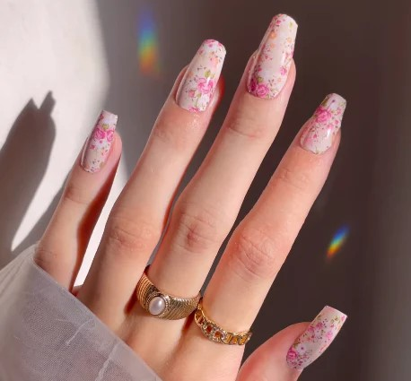
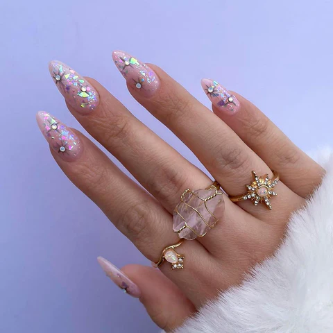
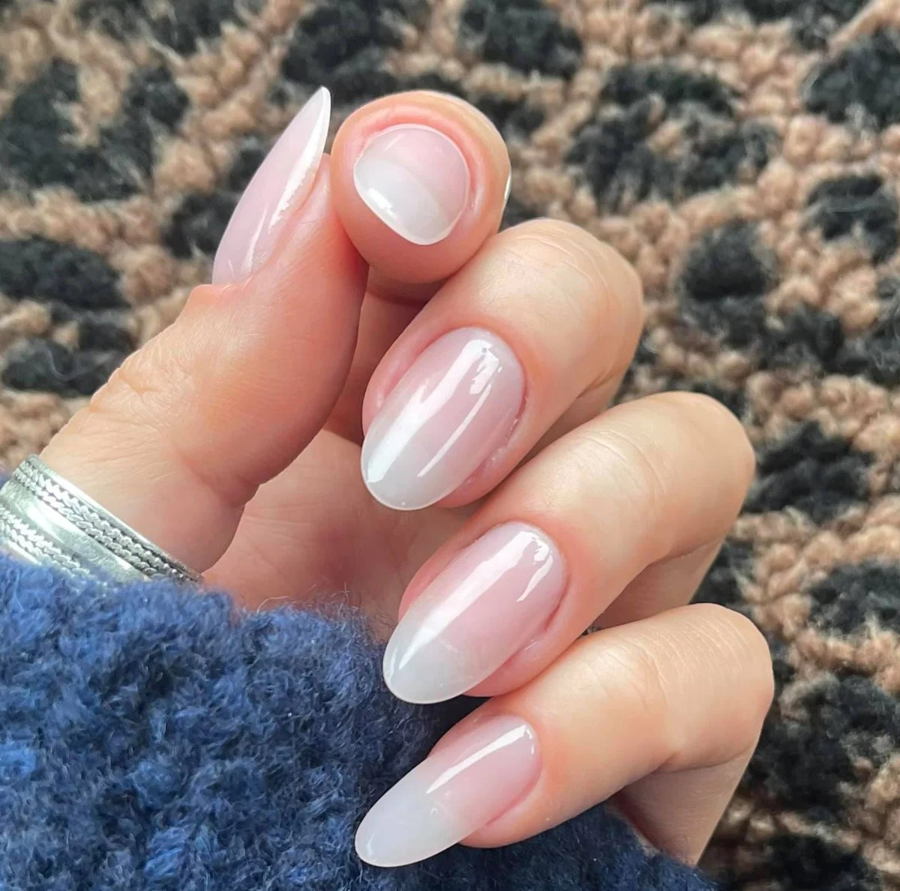
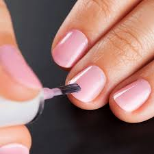

nail art designs
Nail art is a technique involving the decoration of nails with paint, polish, or other materials.
It is used to create designs ranging from simple to elaborate.
acrylic nails
Acrylic nails are created using a mixture of acrylic powder and liquid monomer. They provide a more
durable and complex design option compared to traditional nail polish, but are also more difficult to
apply and remove, and can be more expensive.


Traditional nail polish
The most common type of nail art involves the use of traditional nail polish. This method
is easy to apply and remove, and relatively inexpensive, although it lacks the durability
of some other forms and can chip easily.
Gel nails
Gel nails are created using a gel that is cured under UV light. They are
similarly durable and complex in design to acrylic nails, but can be more costly. Application
and removal processes are similar to those for acrylic nails


Nail wraps
Nail wraps are pre-made designs applied to the nails. They provide a quick and easy
method of nail art creation and come in a variety of designs. They can be applied over
traditional nail polish or acrylic nails.